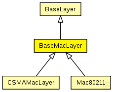

This documentation is released under the Creative Commons license
This documentation is released under the Creative Commons licenseC++ definition: click here
Base module for every mac layer module
The following diagram shows usage relationships between types. Unresolved types are missing from the diagram. Click here to see the full picture.
The following diagram shows inheritance relationships for this type. Unresolved types are missing from the diagram. Click here to see the full picture.
| BaseLayer (simple module) |
Base module for all layer modules. Defines the in and out gates |
| CSMAMacLayer (simple module) |
CSMA MAC protocol |
| Mac80211 (simple module) |
Implementation of the 802.11b MAC protocol. This module is intended to be used in combination with the Decider80211 as decider for the physical layer. |
| Name | Type | Default value | Description |
|---|---|---|---|
| notAffectedByHostState | bool | false | |
| coreDebug | bool |
debug switch |
|
| headerLength | double |
length of the MAC packet header (in bits) |
| Name | Value | Description |
|---|---|---|
| class | BaseMacLayer |
| Name | Direction | Size | Description |
|---|---|---|---|
| upperGateIn | input |
from application layer |
|
| upperGateOut | output |
to application layer |
|
| upperControlIn | input |
control from application layer |
|
| upperControlOut | output |
control to application layer |
|
| lowerGateIn | input |
from NIC |
|
| lowerGateOut | output |
to NIC |
|
| lowerControlIn | input |
control from NIC |
|
| lowerControlOut | output |
control to NIC |
// Base module for every mac layer module simple BaseMacLayer extends BaseLayer { parameters: @class(BaseMacLayer); bool coreDebug; // debug switch double headerLength; // length of the MAC packet header (in bits) }
This documentation is released under the Creative Commons license